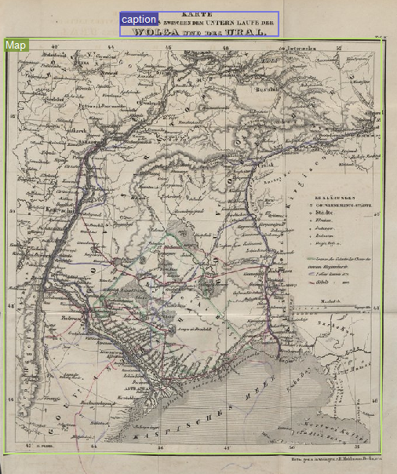

Transcription Guidelines for Ground Truth
OCR-D: DFG-funded Initiative for Optical Character Recognition Development
Maps (MapRegion)
A
MapRegion
is used to label a map.
Figure 1.
Example for MapRegion
